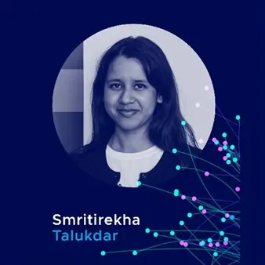

ven 20 nov · dalle 11:20
Malnisio Science Festival - Smritirekha Talukdar
Una domanda all’intelligenza artificiale sembra leggerissima: la scriviamo, premiamo invio e la risposta arriva in pochi secondi. Ma quanto pesa davvero? Dietro ogni risposta lavorano grandi infrastrutture digitali che elaborano dati, consumano energia e utilizzano risorse. Un…
 Indicazioni
Indicazioni
- Costi e prenotazioni
- Costo non indicato · Prenotazione non indicata
- Programma
- Programma da verificare. Apri la fonte ufficiale per orari e possibili aggiornamenti.
- In caso di maltempo
- Nessuna indicazione specifica pubblicata.
- Note
- Acquisito automaticamente dalla fonte.
L’EVENTO
Descrizione completa
Una domanda all’intelligenza artificiale sembra leggerissima: la scriviamo, premiamo invio e la risposta arriva in pochi secondi. Ma quanto pesa davvero?
Dietro ogni risposta lavorano grandi infrastrutture digitali che elaborano dati, consumano energia e utilizzano risorse. Un filo invisibile collega lo schermo del nostro telefono ai data center, e questi ultimi all’ambiente e alla transizione energetica.
A seguire questo filo al Malnisio Science Festival 2026 sarà Smritirekha Talukdar, giovane ricercatrice post-doc di Area Science Park, dove si occupa di rendere i dati energetici più accessibili e utilizzabili grazie alle tecnologie semantiche. Ha conseguito il dottorato in Nanotecnologie all’Università di Trieste, con ricerche sulla produzione e lo stoccaggio dell’idrogeno.
E con lei saranno proprio le nuove generazioni ad aprire l’ottava edizione del Festival!
Venerdì 20 novembre inizieremo dalle scuole, con una mattinata dedicata agli studenti e alle studentesse delle secondarie di secondo grado. A collaborare con noi alla realizzazione del Festival ci saranno anche i ragazzi e le ragazze del Torricelli di Maniago e del Kennedy di Pordenone, protagonisti di un’esperienza che mette in connessione ricerca, scuola e territorio.
Nell’incontro “Quanto pesa una domanda all’AI? Dati, energia e scelte responsabili”, Smritirekha Talukdar ci accompagnerà alla scoperta dell’impronta materiale dell’intelligenza artificiale, per imparare a utilizzare le tecnologie digitali in modo più consapevole.
Perché anche nel digitale ogni gesto è collegato a qualcos’altro. E conoscere queste connessioni è il primo passo per fare scelte responsabili.
Venerdì 20 novembre 2026
Ore 11.20 – 12.00
Incontro riservato alle scuole
Auditorium – Centrale idroelettrica “A. Pitter”, Malnisio, Montereale Valcellina (PN)
Programma completo:
https://malnisiosciencefestival.eu/programma-2026/
IL PROGRAMMA
Programma e orari
Appuntamenti raccolti dalle fonti elencate. Dove manca un orario, non è ancora disponibile in questa scheda.
Programma pubblicato
- Ore 11.20 – 12.00
INFORMAZIONI UTILI
Prima di partire
- Controllare la fonte prima di partire.
ORGANIZZAZIONE